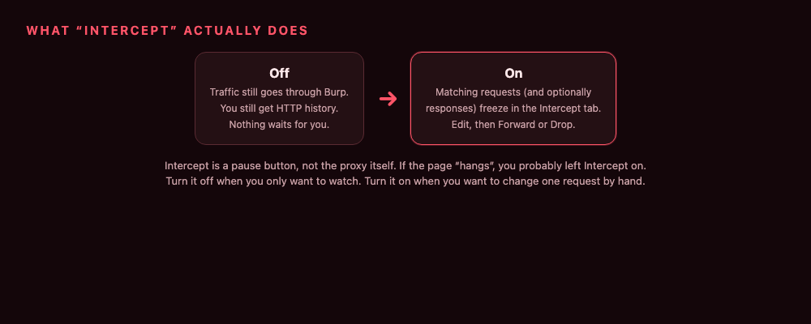

How Burp Proxy Encrypts and Decrypts HTTPS (the full traffic path)
A plain-English walk through Burp Proxy: where it sits, why HTTPS needs two TLS sessions, how Burp's CA signs fake host certs, and the full request/response path from browser to server.
I used Burp for a while before I actually understood why it can show me HTTPS as if it were plaintext. The UI makes it look like magic. It is not. It is two locks, a certificate Burp made on your laptop, and a proxy that sits in the middle on purpose.
This post is that path, start to finish. No scanner talk. Just how the bytes move.
Where Burp sits
Burp Proxy is a local HTTP proxy. By default it listens on 127.0.0.1:8080. Your browser is told: “do not go to the internet directly. Send everything to 8080.”
Then the flow is always:
Browser → Burp → website → Burp → browser

If you use Burp’s browser (Proxy → Intercept → Open Browser), this is already set. If you use Chrome or Firefox yourself, you point the proxy settings (or an extension like FoxyProxy) at 8080.
Until the browser talks to 8080, Burp sees nothing. That is the first “is it even working?” check.
HTTP is easy. HTTPS is the whole story.
A request is just text. Something like:
GET /login HTTP/1.1
Host: shop.test
Cookie: session=abc
On HTTP (port 80) that text sits on the wire as-is. Burp reads it. You read it. Done.
On HTTPS (port 443) TLS wraps that same text. Anyone in the middle should see only ciphertext. Your cookie should not leak. That is the point of HTTPS.

So if Burp is in the middle, how can it show /login and the cookie?
It does not steal the website’s private key. It starts two HTTPS conversations instead of one.
The trick: two TLS sessions, not one
Call them Lock A and Lock B.
- Lock A — browser talking to Burp. Burp pretends to be
shop.test. - Lock B — Burp talking to the real
shop.test. Burp pretends to be the browser.
Inside Burp, after Lock A is opened and before Lock B is used, the HTTP is just text. That is the copy you see in Proxy → HTTP history and in Intercept.

The browser never shares keys with the real server. The real server never shares keys with the browser. Burp holds both ends.
That is a man-in-the-middle. In a pentest you do it to your browser, on your machine, against an app you are allowed to test. Do not point this at other people’s traffic.
First the CONNECT, then the lock
For HTTPS the browser does not start TLS blindly toward 8080. It first asks Burp to open a pipe to the host:
CONNECT shop.test:443 HTTP/1.1
Burp answers:
HTTP/1.1 200 Connection Established
Now the browser starts TLS down that pipe. From the browser’s point of view, “the server” is whoever is on the other end. That someone is Burp.

SNI (Server Name Indication) is in that handshake. It says shop.test. Burp uses that name to mint a certificate for shop.test, so the name in the cert matches the site you typed.
Plain HTTP skips CONNECT. The browser sends GET http://shop.test/… straight to 8080 and Burp forwards it.
Why you install Burp’s CA
TLS is not only encryption. It is also “are you really shop.test?”
In real life, shop.test shows a cert signed by a public Certificate Authority. Your browser already trusts those CAs. Padlock, happy.
Burp cannot use shop.test’s real private key. It does not have it. So Burp does this instead:
- The first time you launch Burp, it creates its own Certificate Authority on your computer. Unique per install. Private key stays local.
- For each host you visit, Burp generates a look-alike cert for that hostname, signed by Burp’s CA.
- Default setting in Burp: Generate CA-signed per-host certificates. That is the one you want.
If the browser does not trust Burp’s CA, you get “Your connection is not private” on every HTTPS site. That warning is correct. The cert is not from a public CA.

Two ways out:
- Use Burp’s browser. It already trusts that CA. Easiest.
- Or download the CA from
http://burpsuite(orhttp://127.0.0.1:8080) and install it as a trusted root in Chrome / Firefox / the OS.
PortSwigger’s own note is worth repeating: if someone else can steal that CA private key from your disk, they could MITM your HTTPS too. Do not copy cacert.der onto a shared machine. Do not email it.
The full path for one HTTPS page
Here is one page load, in order.

Slow version, same steps:
- Proxy is on. Browser uses
127.0.0.1:8080. CONNECT shop.test:443→200 Connection Established.- Browser and Burp finish TLS (Lock A). Burp’s per-host cert is in play.
- Browser is happy because Burp’s CA is trusted.
- Burp opens Lock B to the real server and does a normal HTTPS handshake. It sees the real cert. You can look at that in the response / Server TLS panel if you need to.
GET /arrives inside Lock A. Burp decrypts. History gets a row.- If Intercept is on, the request sits there until you Forward or Drop. You can change a header, a cookie, a JSON body. Burp can also fix
Content-Lengthfor you after an edit. - Burp sends the (maybe edited) request through Lock B.
- The response comes back through Lock B. Decrypt, maybe intercept again, encrypt with Lock A.
- The tab renders. As far as Chrome is concerned it talked to shop.test. As far as shop.test is concerned it talked to a client. Both are talking to Burp.
That is encrypt → decrypt → (you) → encrypt, both ways.
Intercept is a pause button
People mix this up.
Proxy running = traffic goes through Burp. History fills up.
Intercept on = matching messages wait for you.

If a page spins forever, look at the Intercept tab. Something is probably sitting there. Turn intercept off when you are just browsing. Turn it on when you want to tamper with one call.
You can also add rules (only this host, only this method, skip images). Same idea: pause some messages, let the rest through.
When Burp does not decrypt
Sometimes you cannot, or should not, break TLS:
- The app pins the real certificate (a lot of mobile apps). The client will not accept Burp’s look-alike, even with the CA installed.
- You only care about one host and want the rest left alone.
- You want the server to see the browser’s real TLS fingerprint (some anti-bot checks look at that).
Burp calls this TLS pass through. The CONNECT still happens. The TLS bytes are forwarded as-is. Burp does not get a plaintext HTTP copy. History will not show the insides.

There is also invisible proxying, for clients that do not speak the proxy protocol and never send CONNECT (some thick clients, some mobile setups). Then Burp cannot learn the hostname from CONNECT, so you often pin one hostname on the listener’s certificate settings.
Tiny lab you can do in two minutes
- Open Burp. Proxy listener on 8080. Intercept off.
- Open Burp’s browser.
- Visit
https://portswigger.net. - In Proxy → HTTP history, click the row. You should see a normal
GETand HTML — that is Lock A decrypted. - Turn Intercept on. Reload. The request freezes. Change nothing. Hit Forward. The page finishes.
- Optional: in intercept, change
GET /toGET /does-not-exist. Forward. You just proved the server sees Burp’s version of the request, not the browser’s original.
If history is empty, the browser is not using 8080. Fix the proxy, not TLS.
If you get a certificate warning in an external browser, the CA is not trusted yet. Fix that, or stay on Burp’s browser.
What this is not
Burp is not “breaking AES”. It is not recovering the website’s private key. It is not a VPN.
It is a proxy you trust, with a CA you trust, that runs two TLS sessions and lets you read the HTTP in the middle.
Once that picture is clear, Repeater, Intruder, and Logger make more sense. They all eat the same plaintext Burp already peeled out of Lock A.
Official bits I used while writing this: Burp Proxy, installing Burp’s CA, and the proxy / certificate / TLS pass through settings.